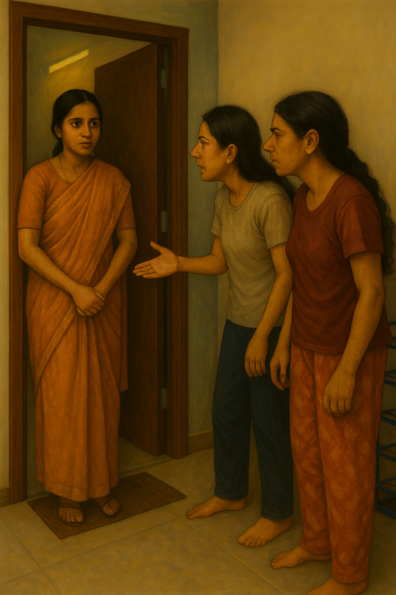

She opened the door to find a slightly older girl in a plain cotton saree, hair braided so tight it looked like it hurt. She wore worn-out rubber slippers, standing awkwardly on the doormat as though afraid to dirty it. Wide-eyed, she blinked under the harsh fluorescent light of the corridor.
Shwetha gave her a once-over and muttered in English to Aditi, "Full village vibes. Looks like she just got down from the KSRTC bus."
Aditi chuckled. "Straight off the sugarcane fields, huh? Broker said she's studious. Let's see."
The visitor's eyes darted from the shoe rack to the fairy-lights strung across the wall, to the pile of cardboard boxes filled with cosmetics.

Switching to Kannada, Aditi asked, "You're the new girl?"
The girl nodded.
"What's your name?" Shwetha tried in Hindi.
"I… I don't know Hindi," the girl murmured in Kannada.
Shwetha groaned. "Perfect. She won't even understand half our colourful vocabulary." Then louder, "So where from, ooru? Some tiny village near Mandya?"
The girl flushed but said nothing.
"Ha! I told you," Shwetha announced, triumphant. "Proper gaonwali. Won't even respond."
Aditi cut her off. She extended her hand kindly. "I'm Aditi. That thundercloud there is Shwetha. And you are…?"
"Saraswati," came the soft reply.
Saraswati stepped in as though walking into a museum. Her gaze lingered on Bollywood posters, the glowing ring-light, a Bluetooth speaker tossed on the bed. She peeked into the bathroom, bent to wash her feet, and yelped when the shower sprayed her sari pallu. She emerged breathless, cheeks flushed.
"Where are your bags?" Aditi asked.
"I… came directly."
Shwetha raised an eyebrow. "So you're planning to survive here in just this one saree?"
But Saraswati barely seemed to hear. She wandered around, staring at everything with unblinking curiosity, while Aditi and Shwetha's questions bounced off her like pebbles.
Then, without warning, she spotted a half-eaten vada pav on the table, grabbed it, and stuffed it into her mouth in one go. Shwetha and Aditi froze, watching her as she continued to gaze at everything else like a child in a fairground.
"Hey!" Aditi snapped. "Don't open my cupboard!"
Shwetha chuckled. "Yeah, better find your own corner, not snoop into ours. Makes life easier for all three of us."
Saraswati drifted to a corner, pulled out a notebook from her bag, and began scribbling furiously. Her head bent low, as if she'd slipped into another world.
"Are you actually planning to live with us?" Aditi asked, half-serious. "Should we confirm with the broker?"
Saraswati glanced up, her thoughts still far away. Before she could reply, Shwetha muttered, "Speak louder, girl. We're not mind-readers."
Finally, Saraswati asked in a timid voice, "Is there… a library nearby?"
"Library?" Shwetha rolled her eyes. "Why?"
"I… need to read about something."
Shwetha laughed. "Who even goes to a library anymore? Everything's on Google." She smirked at Aditi. "See? Pure sambhar-smell villager."
"Google?" Saraswati repeated, tasting the word like it was an ancient artefact.
"You're joking, right?" Shwetha gawked. "How do you even exist without Google?"
"Come," Aditi sighed, flipping open her laptop. The bluish glow lit up Saraswati's awestruck face. Each scroll brought a gasp.
Aditi went on showing her google and telling her what it could do - She was like, "ok Saraswati, lets ask google something that you want to know, shoot your question"
Saraswati in curiosity, thinks for a while and says "Can I ask anything ?"
Aditi goes like - "Yes baba, anything general like news, weather, about a famous person, learn about any subject you want too, here let me show you an example"
Aditi starts typing and whispering "How far is Bangalore from Mumbai"
Google loads up its search results, Saraswati keeps looking at it while Aditi keeps scrolling down while Saraswati is lost into the screen.
Aditi leaned closer, grinning. "Alright, Saraswati. This is your chance—ask Google anything you want."
Saraswati's eyes flickered with hesitation. "Anything?" she whispered.
"Of course, baba," Aditi laughed. "News, weather, famous people, science—whatever you like. Here, let me show you."
She typed as she spoke, half-dramatic, half-teacherly: "How far is Bangalore from Mumbai?"
The results popped up instantly, rows of maps and numbers filling the screen. Aditi scrolled lazily, explaining as she went, but Saraswati didn't hear a word. Her gaze was locked on the glowing text, her reflection caught in the glass—like someone staring into a portal.
"Can I… use it for a while?" Saraswati's voice trembled with excitement.
"One condition," Aditi teased. "You take the spare cot in Shwetha's room."
"Yes! Absolutely!"
Saraswati dropped to the floor cross-legged, fingers fumbling over the keyboard, yet desperate, urgent, as though the machine contained the world she had been waiting for.
Shwetha threw her hands up. "Great. The village goddess joins the circus."